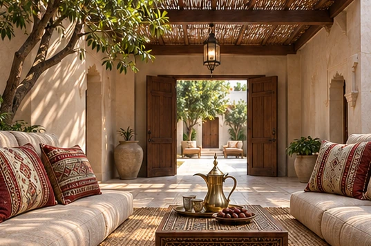
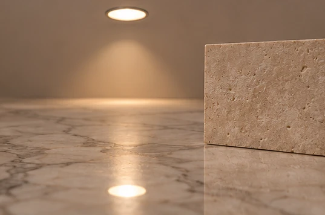
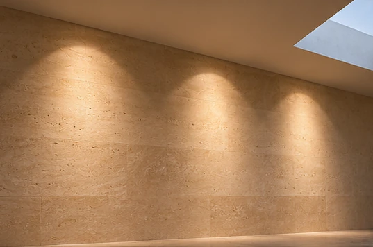
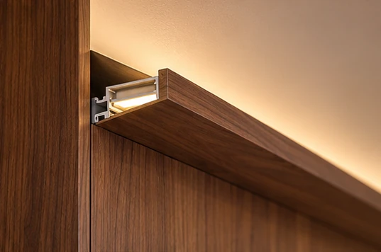
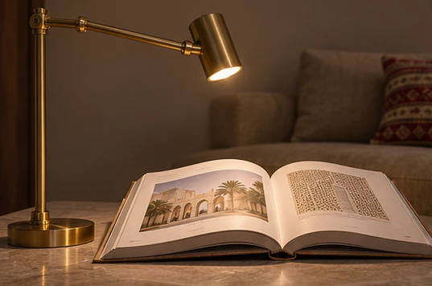
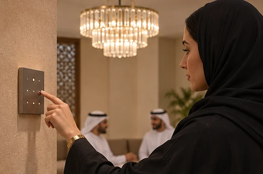
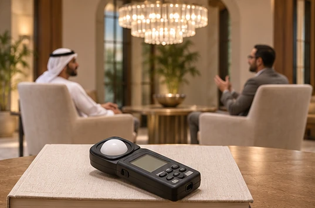
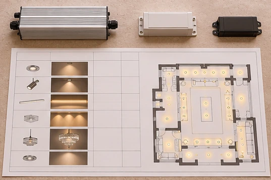

Design from the sofa
In an Abu Dhabi majlis, start the architectural lighting design at the guest’s seated eye height and trace the view towards the host, the artwork and the doors to the courtyard.

A deep-recessed anti-glare downlight keeps its bright aperture out of common sightlines, but the marble floor can still reflect the source directly towards a guest.

Give the room three circuits
An asymmetric wallwasher can make pale limestone read as a continuous plane when setback and spacing are tested together on a full-height sample.

A linear LED profile above joinery uses the ceiling as a broad reflector, so check the cove lip from the stair landing where exposed tape is easiest to see.

At a reading chair, an adjustable task lamp can put light onto the book while the ambient circuit stays low, reducing the output needed across the rest of the room.

Prove the evening scene
For a Dubai villa mock-up, dim the chandelier until its crystals retain sparkle, then bring up the wallwash until faces are comfortable against the background.

Measure lux on the book and check facial shadows from both seats before approving the settings for reading and entertaining.

For the connected-load schedule, include the drivers’ input watts for every layer and divide the applicable total by the agreed area to check lighting power density against the project allowance.
